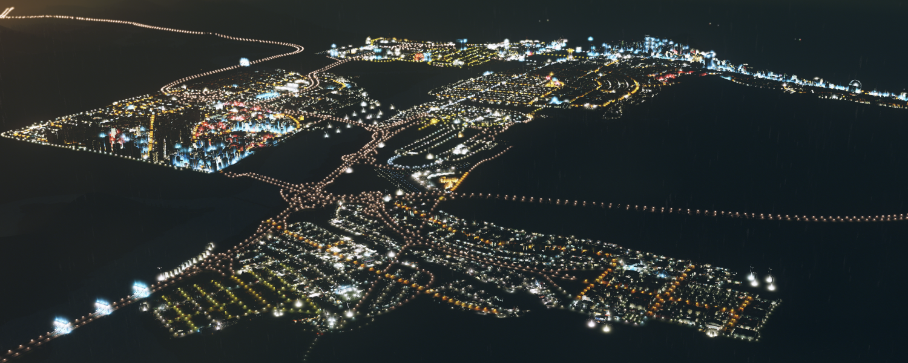
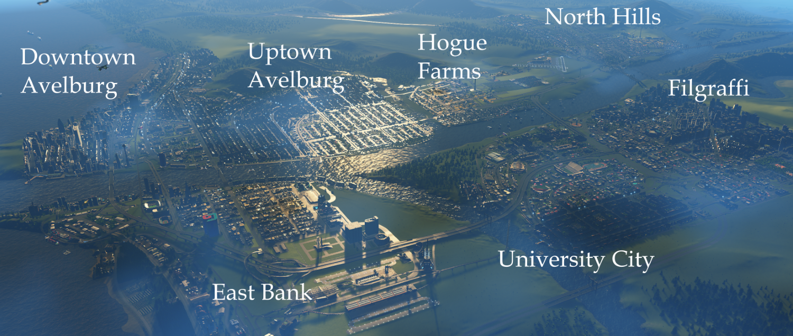

City of Avelburg Tourism - Home Page
Welcome to the website for the city of Avelburg's Department of Tourism! As the city has exploded in size, we've created this website to outline the most essential hotspots to work, play, and enjoy. Whether you're planning to move in or just want to kill an afternoon on a day trip, Avelburg and its surrounding neighborhoods and suburbs will have the spot for you!
City Map
Avelburg consists of the downtown and uptown area, as well as several adjacent suburban developments. Here is a map with each section labeled, so you can better orient yourself when traveling in the city.
Attractions
Looking to spend a day, week, or even extended vacation in Avelburg? No matter what you like to do, we're likely to have what you're looking for. Check out this page (click the image below) to see our many attractions peppered around the county!
Universities
Avelburg and its suburbs are home to three premier higher education centers. Primrose University, Avelburg Arts College, and Holly Polytechnic all have a unique character to them, and welcome students from around the globe. Both prospective students and curious visitors are welcome to visit any of the campuses! Click the image below to visit the Universities page.
Industry
In addition to being a hotspot for students and tourists, Avelburg features several industrial centers where many of the city citizens are employed. All of Avelburg's industrial centers have been making leaps and bounds to be both more efficient and less polluting, which has greatly improved the quality of life for everyone. Click the image below to learn more about our biggest exporters!
Transportation
Both citizens and tourists in Avelburg have places to be! Fortunately, Avelburg's city and county governments have been hard at work building an efficient and beautiful public transportation network so that everybody can get to where they need to be as soon as possible, while also helping save the environment. To see our many transportation options, click the image below!